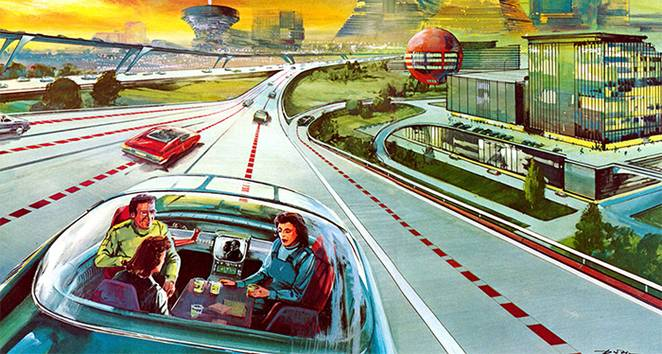
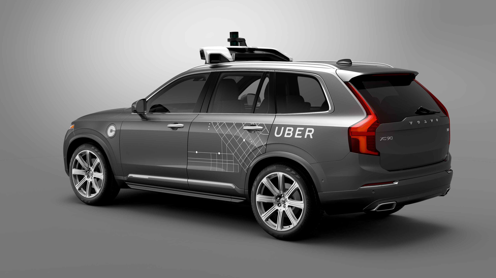

History of Autonomous Vehicles and Cars
It’s important to get to know the history behind autonomous vehicles to begin to understand why autonomous cars are in a current state of uncertainty, and for determining some of the ethical and legal reasons that are unique to it. First, take a look at when autonomy was first used. In the 1860s Robert Whitehead invented a guidance system for maintaining the depth of a torpedo. He labelled it “The Secret” because it allowed English ships to shoot their torpedos from much farther ranges and thereby outperform their human opponents. Now, all sorts of devices and machines are autonomous. There are self-driving harvesters for gathering crops, sailboats with sails that follow the wind, military drones that act on their own, and even robotic vacuum cleaners and lawn mowers. 1www.computerhistory.org/atchm/where-to-a-history-of-autonomous-vehicles/
Perhaps the most obvious application for automation, however, is just now seeing the light of day: autonomous driving. Despite the idea for self-driving cars becoming popular in 1939 at the New York World’s Fair in General Motors Futurama exhibit, it’s taken nearly seventy years for self-driving cars to even be road-tested. Of course, there were technological advances that needed to come first, such as the modern computing, but airplanes use and have used computing for autonomy since SABRE was invented in 1963 to be used on commercial airliners. It’s understandable that perhaps in the 1960s the computers wouldn’t have been adequate since driving requires so many more decisions than a straight flight. However, the capabilities for autonomous highway driving for bigger vehicles, such as semi-trucks and busses were available in the 1970s as evidenced by the Stanford AI Lab Cart from 1971, and the Tsukuba Mechanical Engineering Lab in Japan in 1977. 1www.computerhistory.org/atchm/where-to-a-history-of-autonomous-vehicles/ So why weren’t autonomous vehicles implemented?
There are thousands more decisions that go into driving cars than driving boats or airplanes. Furthermore, cars have no room for error because they are confined to skinny roads. Planes have lots of space in the air, and boats likewise have space in the sea, so humans can easily take over when something with the system goes wrong. This gives the computers in planes and boats the ability to learn. With cars, learning is expensive, and not in the sense of money, but with lives. Cars are unique to planes and boats in that they have to deal with the decisions other drivers make as well. In order to learn, they must make mistakes. Consumers don’t want to trust an experimental vehicle - they want the finished project. This line of thinking has stalled self-driving car developments for decades, forcing breakthroughs to come from behind the scenes.
In 2004, the U.S. Defense Advanced Research Projects Administration, or DARPA, invested in a desert-crossing autonomous vehicle competition in the hope that military vehicles would be self-driven in the near future. This marked the first stage in developing self-driving vehicles, as high-end commercial vehicles started to implement some of the innovations coming from these desert trials. These included parking assist, the ability to stay in a traffic lane, or the ability to stop automatically if a child crosses the street. 1www.computerhistory.org/atchm/where-to-a-history-of-autonomous-vehicles/
Finally, in 2008, Google employees developed the Pribot, with the purpose of having the car drive to get pizza every day. It was so successful that Google sent the Pribot on a stage of test runs, which it passed every time. This led Google to develop and test a fleet of autonomous vehicles that have driven over half of a million miles. 1www.computerhistory.org/atchm/where-to-a-history-of-autonomous-vehicles/
Current
Now, in the current state of self-driving cars, automakers such as Tesla and BMW are making advances in autonomous driving technology. Unfortunately, despite all of the innovations, self-driving cars are still “right around the corner” like they were ten years ago. Currently, automakers are looking to sell self-driving cars without pedals and steering wheels in cities by 2020. 18www.youtube.com/watch?v=_Zd1ByhigPU For example, General Motors is looking to release their self-driving car in San Francisco. The market for self-driving cars in America does not look promising at the moment, with the best sellers being pickup trucks. One exciting market could be for ride-sharing companies like Uber, who may purchase fleets of autonomous vehicles to replace its drivers. If this were to happen, it could lead to people being more comfortable around them and becoming more inclined to purchase them. 18www.youtube.com/watch?v=_Zd1ByhigPU